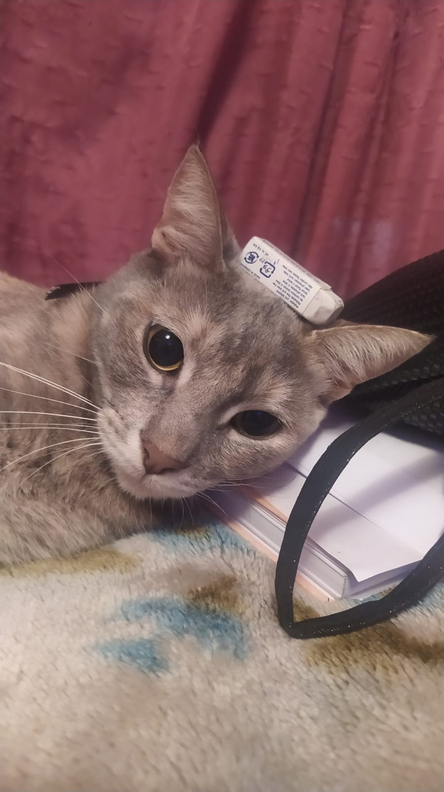
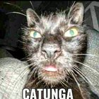
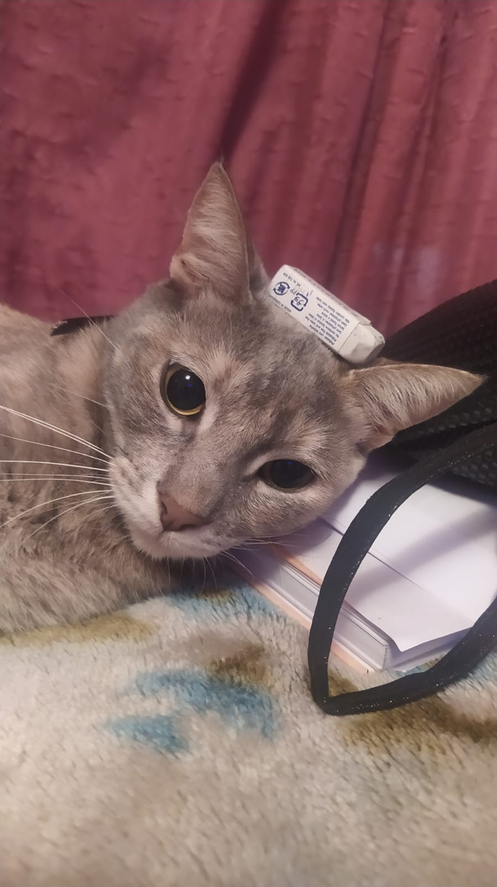
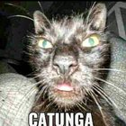

Acerca de
El nombre actual en muchas lenguas proviene del latín vulgar catus. Paradójicamente, catus aludía a los gatos salvajes, mientras que los gatos domésticos eran llamados felis.
Como resultado de mutaciones genéticas, cruzamiento y selección artificial, hay numerosas razas. Algunas, como la raza sphynx o la peterbald están desprovistas de pelo; otras carecen de cola, como los gatos de la raza bobtail o la manx, y algunas tienen coloraciones atípicas, como los llamados gatos azules.
¡Bienvenido a nuestra página “Acerca de”! Aquí, aprenderás más sobre nuestra empresa y los servicios que ofrecemos.
 


